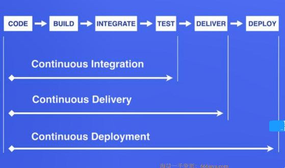

CICD 概念
CICD 概念
DevOps
Devlopment 和 Operation 的组合词
规划-》代码-》构建-》测试-》发布-》部署-》运营-》监控-》再次规划
- devOps 看作开发（软件工程）、技术运营和质量保障（QA）三者的交集
- 突出重视软件开发人员和运维人员的沟通合作，通过自动化流程来使得软件构建、测试、发布更加快捷、频繁和可靠。
- DevOps 希望做到的是软件产品交付过程中
IT工具链的打通，使得各个团队减少时间损耗。更加高效的协同工作。良好的闭环可以大大增加整体的产出。
CICD
持续集成 持续部署

- 持续集成
持续集成是指软件个人研发的部分向软件整体部分交付，频繁进行集成以便更快地发现其中的错误。“持续集成”源自于极限编程（XP），是 12 最初的 12 种实践之一 Ci 需要具备这些：
全面的自动化测试，这是实践持续集成和持续部署的基础，同时，选择合适的自动化测试工具也极其重要；
灵活的基础设施。容器，虚拟化的存在让开发人员和QA不必再大费周折
版本控制工具。如git，cvs，svn等
自动化的构建和软件发布流程工具，如 Jenkins，flow.ci;
反馈机制，如构建/测试的失败，可以快速地反馈到相关负责人，以尽快解决达到一个更稳定的版本。